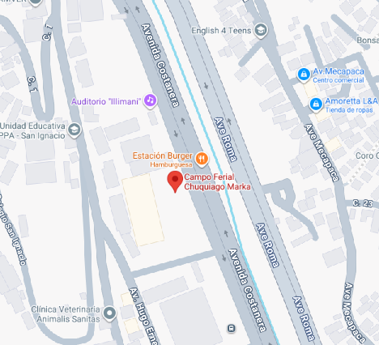

Anime Fest Chuquiago 2026
¡Supera tus límites en el evento más grande de La Paz!
Fecha: 18 y 19 de Abril
Lugar: C.C. Chuquiago Marka
Horario: 10:00 - 22:00
¡Supera tus límites en el evento más grande de La Paz!
Fecha: 18 y 19 de Abril
Lugar: C.C. Chuquiago Marka
Horario: 10:00 - 22:00
Anime Fest Chuquiago 2026 es el punto de encuentro definitivo para la comunidad juvenil y fanática de la cultura pop japonesa en Bolivia. Producido por la Organización Juvenil La Paz, este evento ofrece un espacio seguro, vibrante y lleno de energía para disfrutar de tus pasiones.
Esperamos a miles de asistentes listos para compartir su amor por el anime, el manga, los videojuegos y el cosplay en el recinto más moderno de la ciudad.
Escenario Principal y Proyecciones

Cultura, Comercio y Competencia
Tenemos el orgullo de presentar a las voces legendarias que marcaron nuestra infancia. ¡Directamente desde México!
La voz de Goku (Dragon Ball Z)
Actor, director de doblaje y locutor mexicano con más de 30 años de trayectoria.
La voz de Vegeta (Dragon Ball Z)
Reconocido actor de doblaje, famoso por dar vida al Príncipe de los Saiyajin.
Dirección: Av. Costanera s/n, Bajo Seguencoma.
Ciudad: La Paz, Bolivia.
Referencia: Cerca de la Estación del Teleférico Verde.
El recinto más moderno y amplio de la ciudad.
